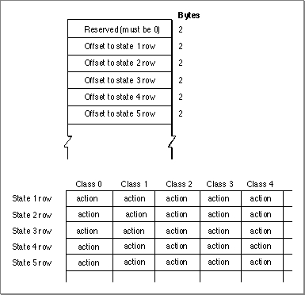
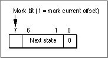
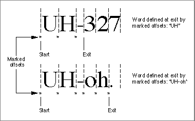

Supplying Custom Word-Break Tables
The Text UtilitiesFindWordBreaksprocedure uses state machines and associated tables in a script's string-manipulation resource to determine word boundaries and
line breaks.The
FindWordBreaksprocedure examines a block of text to determine the
boundaries of the word that includes a specified character in the block. Usually,FindWordBreaksuses different state tables to define words for word selection than it does for line breaking.To replace the word-selection criteria, you can supply a replacement string-manipulation resource with a modified break table. This section describes the break table and how
FindWordBreaksuses it.NBreakTable Format
FindWordBreaksuses word-break tables of typeNBreakTable, defined for system software version 7.0 and later:TYPE NBreakTable = RECORD flags1: SignedByte; {break table format flags} flags2: SignedByte; {break table format flags} version: Integer; {version no. of break table} classTableOff: Integer; {offset to ClassTable array} auxCTableOff: Integer; {offset to auxCTable array} backwdTableOff: Integer; {offset to backwdTable array} forwdTableOff: Integer; {offset to forwdTable array} doBackup: Integer; {skip backward processing?} length: Integer; {length of the break table} charTypes: ARRAY[0..255] OF SignedByte; tables: ARRAY[0..0] OF Integer; {break tables} END; TYPE NBreakTablePtr = ^NBreakTable;The tables have this format and content:
Field Description
- flags1
- The high-order byte of the break table format flags. If the high-order bit of this byte is set to 1, this break table is in the format used by
FindWordBreaks.- flags2
- The low-order byte of the break table format flags. If the value in this byte is 0, the break table belongs to a 1-byte script system; in this case
FindWordBreaksdoes not check for 2-byte characters.version- The version number of this break table.
- classTableOff
- The offset in bytes from the beginning of the break table to the beginning of the class table.
- auxCTableOff
- The offset in bytes from the beginning of the break table to the beginning of the auxiliary class table.
- backwdTableOff
- The offset in bytes from the beginning of the break table to the beginning of the backward-processing table.
- forwdTableOff
- The offset in bytes from the beginning of the break table to the beginning of the forward-processing table.
- doBackup
- The minimum byte offset into the buffer for doing backward processing. If the selected character for
FindWordBreakshas a byte offset less than doBackup,FindWordBreaksskips backward processsing altogether and starts from the beginning of the buffer.- length
- The length in bytes of the entire break table, including all the individual tables.
- charTypes
- The class table. See explanation below.
- tables
- The data of the auxiliary class table, backward table, and
forward table.The backward-processing table and the forward-processing table have the same format, as shown in Figure B-9. The table begins with a list of words containing byte offsets from the beginning of the state table to the rows of the state table; this is followed by a c-by-s byte array, where c is the number of classes (columns) and s is the number of states (rows). The bytes in this array are stored with the column index varying most rapidly-- that is, the bytes for the state 1 row precede the bytes for the state 2 row.
- The class table is an array of 256 signed bytes. Offsets into the table represent byte values; if the entry at a given offset in the table is positive, it means that a byte
whose value equals that offset is a single-byte character, and the entry at that offset is the class number for the character. If the entry is negative, it means that the byte is the first byte of a 2-byte character code, and the auxiliary class table must be used to determine the character class. Odd negative numbers are handled differently from even negative numbers.- The auxiliary class table assigns character classes to 2-byte characters. It is used when the class table determines that a byte value represents the first byte of a 2-byte character.
- Here is how the auxiliary class table handles odd negative values from the class table. If the first word of the auxiliary class table is equal to or greater than zero, it represents the default class number for 2-byte character codes--the class assigned to every odd negative value from the class table. If the first word is less than zero, it is the negative of the offset from the beginning of the auxiliary class table to a first-byte class table (a table of 2-byte character classes that can be determined from just the first byte). The value from the class table is negated, 1 is subtracted from it to obtain an even offset, and the value at that offset into the first-byte class table is the class to be assigned.
- Here is how the auxiliary class table handles even negative values from the class table. The auxiliary class table begins with a variable-length word array. The words that follow the first word are offsets to row tables. Row tables have the same format as the class table, but are used to map the second byte of a 2-byte character code to a class number. If the entry in the class table for a given byte is an even negative number,
FindWordBreaksnegates this value to obtain the offset from the beginning of the auxiliary class table to the appropriate word, which in turn contains an offset to the appropriate row table. That row table is then used to map the second byte of the character to a class number.- The backward-processing table is a state table used by
FindWordBreaksfor backward searching. Using the backward-processing table,FindWordBreaksstarts at a specified character, moving backward as necessary until it encounters a word boundary.- The forward-processing table is a state table used by
FindWordBreaksfor forward searching. Using the forward-processing table,FindWordBreaksstarts at one word boundary and moves forward until it encounters another word boundary.Figure B-9
- Note
- There is a maximum of 128 classes and 64 states (including the start and exit states).

NBreakTablestate table
Each entry in this array is an action code, which specifiesThe format of an action code is shown in Figure B-10.
- whether to mark the current offset
- the next state, which may be the exit state (state 0)
Figure B-10 Format of an
NBreakTableaction code
Table B-6 shows an example of the classes used in a state table. It is taken from the word-selection table of the U.S. localized version of the Roman script system.Table B-7 shows an example of the defined states for a state table. It is taken from the forward-processing table of the word-selection table of the U.S. localized version of the Roman script system.
How FindWordBreaks Uses the Break Table
FindWordBreaksuses a state machine to determine the word boundaries on either side of a given character in a text buffer. The state machine must start at a point in the buffer at or before the beginning of the word that includes that character. If the specified character is sufficiently close to the beginning of the text buffer (controlled by thedoBackupMinparameter in the break table), the state machine simply starts from the beginning of the buffer. Otherwise,FindWordBreaksuses the backward-processing table to work backwards from the specified character, analyzing characters until it encounters a word boundary.Once determined, this starting location is saved as an initial word boundary. From this point the
FindWordBreaksstate machine moves forward using the forward-processing table until it encounters another word boundary. If that word boundary is still before the specified character, its location is saved as the starting point and the state machine is restarted from that location. This process repeats until the state machine finds a word boundary that is after the specified character. At that point,FindWordBreaksreturns the location of the previously saved word boundary and the current word boundary as the offset pair defining the word.The state machine operates in a similar manner whether moving backward or forward; any differences in behavior are determined by the tables. The machine begins in the start state (state 1). It then cycles one character at a time until it finds a boundary break and exits. In each cycle, the current character is mapped to a class number, and the character class and the current state are used as indices into the array of action codes in the state table. Each action code specifies the next state and whether to mark the current offset. When the state machine exits, it has encountered a word boundary. The location of the word boundary is the last character offset that was marked.
Figure B-11 gives two examples of the forward operation of the state machine for word selection. It shows that an exit may or may not be generated at a hyphen, depending on the character that follows. It also shows that the marked offset on exit may or may not include the last character before the exit was generated.
Figure B-11 Forward operation of the state machine for word selection
